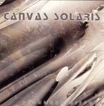

Home Artist links Label link

Canvas Solaris - Penumbra Diffuse
| Artist: | Canvas Solaris |
| Title: | Penumbra Diffuse |
| Label: | Sensory SR3030 |
| Length(s): | 49 minutes |
| Year(s) of release: | 2006 |
| Month of review: | [05/2006] |
Line up
Nathan Sapp - guitars
Ben Simpkins - bass
Hunter Ginn - drums, percussion
Tracks
| 1) | Panoramic Long-range Vertigo | 3.54
|
| 2) | Horizontal Radiant | 11.24.
|
| 3) | Accidents In Mutual Silence | 4.18
|
| 4) | Vaihayasa | 4.22
|
| 5) | To Fracture | 7.45
|
| 6) | Psychotropic Resonance | 4.45
|
| 7) | Luminescence | 12.00
|
Summary
The music
Canvas Solaris a three person outfit that -according to the sticker on the front- unfolds a new course in technical metal. Generally speaking this disc starts off not overly technical, and it's not always as metallic. The feeling of a number tracks is rather tranquil. Yes, the instruments used remind of a powertrio outfit, and there are heavy guitars at times, but not that many. As far as technical goes: the gents are mostly playing melodies, without constantly suggesting their focus might be with technique rather than that. As the disc progresses, I feel that both metallic bits and technique push forward. This is not generally an enrichment. Having said that, the closer is rather tranquil.
There are some Spanish-type influences in the use of guitars, but not overly so. Apart from that some electronics are used. Vaihayasa is more of a flamenco type track, with sparse rock influences. Mostly flamenco, though. The name Al DiMeola comes to mind here. To Fracture has some guitar bits that come near Geoff Mann's wobbly sound. And bits that come near Brian May's seventies wheels. Most of the time the instrumentation is your basic electric guitar-bass-drums set.
Conclusion
This is pretty decent, but it's not really special from a stylistical, technical or melodical side. That makes the disc of interest to those into the instrumental jazzrockmetal style that is a little more listener friendly than the powertrio formula, but I see no reason for a crossover for those into other branches of progressive.
© Roberto Lambooy